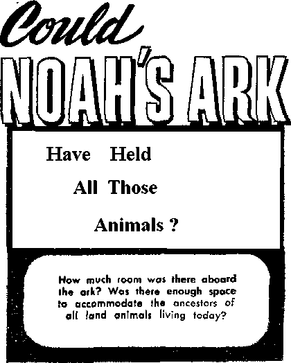
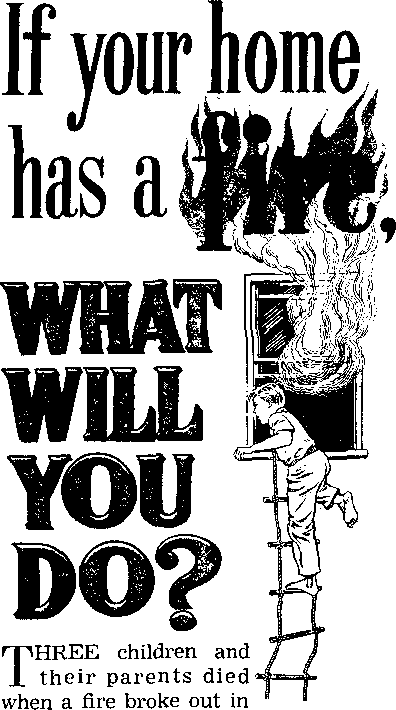
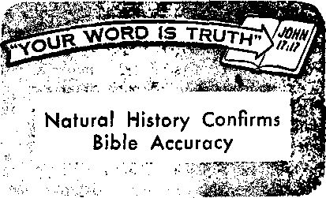

OCTOBER 22, 1968
THE REASON FOR THIS MAGAZINE
News sources that are able to keep you awake to the vital issues of our times must be unfettered by censorship and selfish interests. "Awake!" has no fetters. It recognizes facts, faces facts, is free to publish facts. It is not bound by political ties; it is unhampered by traditional creeds. This magazine keeps itself free, that it may speak freely to you. But it does not abuse its freedom. It maintains integrity to truth.
The viewpoint of “Awake!" is not narrow, but is international. "Awake!" has its own correspondents in scores of nations. Its articles are read in many lands, in many languages, by millions of persons.
In every issue "Awake!” presents vital topics on which you should be informed. It features penetrating articles on social conditions and offers sound counsel for meeting the problems of everyday life. Current news from every continent passes in quick review. Attention is focused on activities in the fields of government and commerce about which you should know. Straightforward discussions of religious issues alert you to matters of vital concern. Customs and people in many lands, the marvels of creation, practical sciences and points of human interest are all embraced in its coverage. "Awake!” provides wholesome, instructive reading for every member of the family.
"Awake!" pledges itself to righteous principles, to exposing hidden foes and subtle dangers, to championing freedom for all, to comforting mourners and strengthening those disheartened by the failures of a delinquent world, reflecting sure hope for the establishment of God's righteous new order in this generation.
Get acquainted with "Awake!” Keep awake by reading “Awake!”
Published Simultaneously in the United States by mr WATCHTOWER BIBLE AND TRACT SOCIETY OF NEW YORK. INC. 117 A flams Street Brooklyn, N.Y. 11201, U.S.A.
and in England WATCH TOWER BIBLE AND TRACT SOCIETY
Watch Tower House. The Ridgeway London N.W. 7, England N, H. Knorr, President Grant Suites, Secretary
Average printing each issue: 5,150,000
5d ■ eogy (A citral is. 5c; Soith Afrit*, 3 '/»«>
Yearly subHpript.ic!i rites
Oflttt for scan tmuri t Ti !>■ editions
America, U.S., 117 Adams Street, Brooklyn, X.Y, U2UI Australia, 31 Beresford E4-, Strathficld, N.fi.W. 2135 SI Canada, 150 Brtdgdand Are.. Toronto 1U. Ont H England, Watch Toner House,
The RidjRwiy, London N.W. 7 A/6
Naw Zealand, New North Rd.. Auckland fl fMk Soith Africa, Private Bag 2. P.O. Ctandafonteln, Tvl 7De
(Monthly editions cost half the above rates.)
Remittance* for subscriptions should be sent 1o the office tn your country. Otherwise send your remittance to Brooklyn. Notice of expiration Is sent al. lca&( two issues, before subscription e?iplres.
Now published in 26 languages Semimonthly—Afrikaans, Obu&no, Panish, Dutch, Engllsli, Finnish, French, German, Greek. Iloku, I Uli an, Milanese, Korean. Norwegian, PortnjjueHe, Spanish. -Swedhh, Tagalog. Zulu.
Monthly ■ Chinese, Cinyenja, Hillgaynon, Malayalam, Polish. Tamil, Ukrainian.
|
CHANGES OF ADDRESS should mach us thirty days |
|
before your moylni date. Give us ycir old and new |
|
address (If possible, yoer old address label). Write |
|
Watch Tower, Watch Tower House, The Ridgeway, |
|
London N.W. 7, England. |
Enured as wcond-clasF matter at. Broolilyn, N.Y. Printed In England
The Bible translation regularly a sod In "Awake I” Is (he New World Translation of the Holy Scriptures, 1261 edition. When other translations are used, this Is clearly marked.
CONTENTS
What Has Happened to Respect
"Awake!” Appreciated over the Years 11 Could Noah's Ark Have Held
If Your Home Has a Fire, What
Credit Cards—Convenient and Dangerous
Graduates of Gilead School Join Missionary Ranks
"Your Word Is Truth"
Natural History Confirms Bible Accuracy
Watching the World
21
26
28
30
Many now challenge the obligation of citizens to obey the law. What is the proper position?
THROUGHOUT the world there is a marked breakdown in respect for authority.
In Chicago, a city that has experienced rioting and increasing crime, 0. W. Wilson, as head of police, observed: “There is not only lack of respect for police authority, but for all our institutions-—our courts, the church, parents, the home. In every situation where there is an authority figure, some people are rebelling against that figure. People today simply seem insistent on being above authority.”
An editor of a news magazine wrote: “We are today on the verge of a complete breakdown of our governmental structure. . , . City after city is plagued with ‘demonstrations’ and disorders led by irresponsible elements who put their own interests above those of the community. Crime has increased to an unprecedented degree as law enforcement is frustrated. . . . Even clergymen, who are supposed to preach doctrines of human love and conciliation, have joined the mob, and some have actually participated in ‘sit-ins’ or Tie-ins’ or marches that have incited violence.”—U.S. News & World Report, August 29, 1966.
Why is respect for authority declining so drastically? Why are people in such numbers rebelling against it? Who is at fault? What is the proper attitude to have toward authority?
If you were to judge the matter on the basis of the quotations from the Chicago police chief and the news magazine’s editor, you could easily conclude that every person who does not do everything authorities require is a criminal.
But is this so? Is the person who conscientiously objects to a policy or requirement of a particular authority the same as a man who burglarizes a home, assaults a woman, participates in looting or throws a Molotov cocktail through a window? Is there a difference?
In many instances, individuals sincerely struggle with their conscience because of moral issues. They observe various governmental, religious and business authorities doing things or requiring things to which they conscientiously object. Society may not approve of their course, but does this make them criminals? Surely, the person who respects high moral standards and feels hurt over injustices done to his fellowman cannot be considered the same as the criminal who has no respect for law and order.
But before we further analyze the position of those who conscientiously object to doing what an authority may require, let us consider the disrespect for authority that takes the form of criminal activity. How and where does this begin?
Disrespect that leads to criminal activity is often observed to have its beginning in the home. J. Edgar Hoover, head of the United States Federal Bureau of Investigation, noted that modern parents fail to teach their children “respect for law and order.” They neglect to give them kind, but firm, discipline, or to impress upon them their responsibilities to the family. Thus, the children learn to disrespect parental authority.
This has far-reaching effects. For soon the children are refusing to submit to authority outside the home. As Assistant Chief Inspector H. Taylor of the New York City police explains: “There’s a chain reaction. Disrespect for parents results in disrespect for policemen and the law generally.”
School is one of the first places where this lack of respect for authority in the home manifests itself outside the home. In some schools conditions are almost completely out of control, as Inspector Taylor observes: “You can see this widening wave of disrespect for authority in the schools. In New York City schools we have shocking cases—assaults on teachers, vandalism, displays of vicious attitudes. Facing this, teachers are helpless.”
In addition to the fact that parents often do not discipline their children properly, there is also the bad example set by those considered to be respectable citizens. Some parents, for example, frequently break traffic laws, even asking their youngsters to watch out the rear window for the police. Or they may cheat on their income tax, or take things that do not belong to them from their employer. Do you not think this parental example does much to weaken the respect children have for authority?
Of course, there arc many other reasons for the growing disrespect for authority. One is the moral corruption of many persons in positions of responsibility. In some communities it is common knowledge that officials accept payments of money to keep quiet about illegal operations. In fact, it is not unusual for citizens in certain areas to see policemen accept “payoffs” for favors. Such corruption weakens respect for authority.
Then there is the dismay caused by the contradictions of religious and political authorities. Within a church organization one leading clergyman will state that war is morally right and that youths have the obligation to participate in it. Yet, another ranking clergyman of the same religion will say that not all war is morally right and that youths need not give support. Members of the same political party often display the same contradictions, holding completely opposite viewpoints. All of this surely does not build respect for authority, especially on the part of younger persons whose very lives are at stake.
Then, there is another major reason for growing disrespect for authority. It is the abuse of authority by those who wield it. When a dictator requires men blindly to obey his bad policies, many say that decent persons should not obey. And when certain groups within a country, such as the poor or minority groups, feel discriminated against and neglected, then their respect for governmental authorities diminishes.
Yet, almost everybody except anarchists recognizes the need for law and order. Such cannot be maintained without the proper and legitimate respect for authority.
In a family, would there not be grave difficulty if children did not obey the parents? If you are a parent, you no doubt have already seen what can result when children do not show proper respect for parental authority. Children may want their own way and may cry, scream and stamp the floor trying to get it. But your home would be chaos if you let them have their own way and govern themselves. That is why the Bible wisely commands children to be obedient to their parents. —Eph. 6:1.
Similarly, what would happen if every person became a law to himself and refused to obey laws he did not like, even good laws designed to regulate traffic, morals, and other human relationships? The result would be anarchy. As C. Friedrich, professor of government at Harvard University, notes: “Modern man claims autonomy, demands freedom and insists on governing himself. This threatens universal anarchy because a large number of people have no idea of how to govern even their own thoughts and passions.”
Thus, any nation or society whose citizens fail to accord proper respect to law and authority simply cannot long endure. “In all recorded history, none ever has,” points out former Supreme Court Justice Charles Whittaker. He adds: “On the contrary: History shows that every society which became lawless soon succumbed, and that the first evidences of each society’s decay appeared in the toleration of disobedience of its laws and the judgments of its courts.”
While decent persons can see the need for proper obedience to authority to protect their welfare, what happens if the authority is bad? What if a dictatorial ruler orders one to do things that violate one’s sense of morality? Should his orders be unquestioningly obeyed?
Following World War II questions such as these were raised with respect to a person’s moral responsibility in the face of immoral actions ordered by the Nazi authorities. On trial at Nuremberg for their war crimes were Germans who said that they simply had obeyed the orders of their governmental authorities. Could they properly be convicted and punished for carrying out those orders? Bayard Rustin, a proponent of civil disobedience, explains: “The meaning of the Nuremberg Trials was precisely that: Gentlemen, you say you did these things because they were the law. We chop off your head because you did not have moral stamina enough to engage in civil disobedience.”
In this case unqualified obedience to misused and abused authority earned condemnatory judgment. Those Germans were either imprisoned or executed for their crimes, even though they had only been carrying out orders. Clearly, it is one thing to suffer an injustice because of harsh and oppressive actions of rulers; but it is an entirely different matter to execute an order that inflicts such injustice and oppression on others.
Observes N. Chomsky, professor at the Massachusetts Institute of Technology: “After the lesson of Dachau and Auschwitz, no person of conscience can believe that authority must always be obeyed. A line must be drawn somewhere.”
But exactly where is the line to be drawn? When should authority, whether political, religious or otherwise, be obeyed? Under what circumstances is it right to disobey?
This is a burning matter among many people today and is the subject of a great deal of debate. A common view about it was expressed by H. C. Kelman, professor at the University of Michigan. He said: “A good citizen engages in civil disobedience only when he is morally repelled by a law or policy and when its objectionable features touch on the core of his identity.”
Yet, opinions such as this do not establish a right standard. What standard should determine what is morally objectionable? Often it is suggested that what laws should be obeyed or disobeyed must be left up to the individual. But then each one becomes a law to himself, and that results in anarchy.
So then, how can one determine where he should properly draw the line? Under what circumstances should authority be disobeyed ? Who should set the proper standard?
In regard to respect for governmental authorities, a basic difficulty often overlooked is that no human government is able to satisfy all the desires of its subjects. As Professor Friedrich observes: “People now expect freedom from fear and freedom from want which are beyond the power of governments to supply. . . . And the more effort is made to provide these means, the more there is dissatisfaction because they are not fully realized.” This is a fact. Never has a human government truly and lastingly provided freedom and justice for all!
Why not? Because human governments simply are unable to provide righteous rule. Governments are composed of imperfect, dying men. They do not have the ability to govern with infallible justice. Who can? Only the Creator of earth and man. And will he ever do so? Yes, and that is the reason why Jesus Christ taught his followers to pray for the coming of God’s kingdom, or government. (Matt. 6:9, 10) That government ruling from heaven will establish perfect, righteous rulership and will do away with the need for all the many conflicting forms of human government now in evidence. —Dan. 2:44.
But in the meantime, what? If we are to benefit personally from the change that God is going to bring about, then we must now have the kind of respect for governmental authority that God wants us to have. What is that? The Bible answers: “Let every soul be in subjection to the superior authorities.” (Rom. 13:1) These “superior authorities” are the earthly political governments, and Christians are commanded by God to have proper respect for them. Even if they do not provide the freedoms and benefits the Christian desires, he knows that no government of imperfect humans will do so, not even one that he might try to set up, and patiently he waits on Almighty God to bring in His perfect government.
Yet, this subjection commanded by God is not total, or absolute. Jesus Christ told his followers to “pay back, therefore, Caesar’s things to Caesar, but God’s things to God.” (Matt. 22:21) The Christian cannot give God’s things to Caesar (the governmental authorities). Thus, the line is drawn at this point. And the line is not determined by the Christian’s personal opinion. It is determined by the perfect standard God has provided as a guide— his Word, the Bible.—1 Thess. 2:13; 2 Tim. 3:16, 17.
So when a human authority orders a person to do something that violates what is specifically commanded in God’s Word, the Christian must obey the highest authority, his God. He cannot obey the human authority when it asks him to be disobedient to Almighty God. That is why Peter and the other apostles of Jesus Christ said on one occasion: “We must obey God as ruler rather than men.” —Acts 5:29.
But what if the clergy themselves urge you to follow a course that conflicts with God’s law? In speaking of such religious leaders of the first century, Jesus Christ said:' “Let them be. Blind guides is what they are.” (Matt. 15:14) Rather than following such a blind guide, to your own injury, listen to what God’s own Word says. “Get out from among them,” and associate with people who really apply God’s Word in their lives and advocate it to others.—2 Cor. 6:17.
Clergymen may be out in front in civil rights demonstrations. Priests in some parts of South America even share in guerilla warfare to topple the existing governments, because they believe them to be oppressive. But in so doing, are they being “in subjection to the superior authorities”? Are they being obedient to God? To the contrary, they are using their religious office as a cloak for political activity and they urge you to follow them. But that is not the Christian way.
Does this mean that a Christian is supposed to be unconcerned about injustice and suffering? Not at all. The opposite is true. A true Christian cares very deeply, but he also appreciates that Jehovah God has reserved the destruction of this entire wicked system of things and its “superior authorities” for the appointed king of his kingdom, Jesus Christ. Persons who really believe the Bible have supreme confidence that God will set matters straight, and that he will do so in the very near future. (Rev. 19:11-16) With sincere concern for their fellowmen, they point them to this as the only real answer to the deep-seated problems of humankind.
Here, then, is the sure way of fulfilling one’s obligations to both God and man— by obeying the standards of conduct and conscience inspired by God and recorded in the Bible. These standards enable the Christian to conduct himself properly in every situation. They show him which way to go when there is a conflict of authority. They safeguard him against joining in disrespect for all authority, for all law and order, because proper obedience to authority is required by God. And when authorities do what is hurtful, he patiently endures, looking forward to the time when the only righteous and just government, the kingdom of God, will cause God’s righteous standards to be applied everywhere on earth.—Matt. 6:9, 10; Rev. 21:3, 4.
Where is the Comet?
pZ The spectacular comets that shoot through space are often thought to be gigantic. And large they may be; the tail of the Great Comet of 1843 was some 200,000,000 miles long. Yet if all the matter in 10,000 cubic miles of such a tail were collected together, it has been estimated that it would amount to less than a cubic inch of solid matter.
ONE out of every six Americans reaches the age of forty-five without his original teeth. This high incidence of tooth loss could be avoided if more people would take care of their teeth while they have them. But too many persons take their teeth for granted and fail to realize that lack of care can ruin them.
How have you been treating your teeth?
Do you know what to do to keep them? When they are gone, it is too late. The time to care for them is while you have them. Children especially need to learn at an early age to value their teeth and how to give them proper care.
A major cause of tooth decay*, it is believed, is the refined sugar and starch in the foods that a great many people eat. These are acted on by bacteria in the mouth, producing harmful acids that begin attacking the enamel of the teeth within a few minutes. Thus, if food is left between the teeth, it permits the bacteria, over a period of time, to produce acids that gradually break down the enamel those spots. Although tooth enamel is the hardest substance in your body, it cannot resist indefinitely prolonged and repeated acid attacks.
After a while a small cavity will form In the tooth and decay will progressively eat away the tooth. If left untreated the cavity will steadily grow larger and larger. In time infection may set in and spread to the jawbone and other parts of the mouth. Then you will be in reai trouble.
Would it not be much wiser to prevent as many cavities as possible and have those that do appear cared
for promptly by a dentist? His drill, of course, is not pleasant, but when a cavity is small the painful drilling is far less than when the decay has spread. So the longer you put off going to a dentist the more painful your visit may be when you do finally go, and your bill will also be larger.
Among children, decay is the primary cause of loss of teeth. Parents, therefore, are wise if they teach their children proper tooth care and have their teeth examined regularly.
of of is of
Disorders of the gums and of other tissues connected with the teeth are said by dentists to be the major cause of loss teeth after the age of thirty-five. One these disorders is called gingivitis. It caused by accumulation on the teeth food particles and tartar, which irritate the surrounding tissues. Tartar is an incrustation of food residues and other substances.
If this condition is allowed to continue,
in
CROSS SECTION OF TOOTH
-TARTAR
INFLAMED GUMS
BONE LOSS
the gums can become badly inflame^, swollen and tender. They may eventually draw away from the teeth, causing pockets to form between the gums and the teeth. That makes the situation worse, because food lodges in these pockets and is very difficult to remove. The tissues may never reattach to the teeth, and the bone under the teeth may develop infections that destroy it. Eventually the teeth become loose and have to be removed.
Perhaps you know someone who neglects his teeth because he dislikes the thought of going to a dentist and having a drill used on them. He may reason that when his teeth are so bad that they have to be pulled out he can wear dentures, that is, artificial teeth. That is dangerous reasoning. Not everyone can wear them successfully. Also, infection from bad teeth may destroy the bone ridge under them, making it very difficult, if not impossible, to use the false teeth satisfactorily. Besides that, the infection could cause the health of one’s entire body to deteriorate.
A full set of artificial teeth cannot function as well as a complete set of normal, healthy teeth. They can cause much discomfort and many problems to those wearing them. A person is much better off if he makes his natural teeth last as long as possible by giving them proper care.
Of course, there may be occasions when bad teeth have to be removed. When this happens a prompt replacement of the missing tooth by an artificial one is recommended by dentists. The other teeth can be adversely affected when a tooth is missing unless the empty space is filled. The adjacent teeth and the opposing teeth can be caused to shift out of their normal position because of the undue pressure put on them. This can injure the supporting bone and soft tissues surrounding the shifting teeth. So dentists recommend filling gaps promptly with artificial teeth.
Proper nutrition is an important'factor in developing and maintaining good teeth. Even before a baby is born the principal development of his teeth has begun, and this means that the mother needs good nutrition because it affects the development of the child’s teeth as well as the rest of his body.
After a child is born, adequate amounts of protein, minerals and other important food elements are needed for proper growth of the teeth. It requires a measure of discipline to make the child eat what is for the good of his body, and not only what pleases him. Control over the snacks he eats later on is also necessary because of the usual preference children have for tooth-damaging sweets.
Parents can encourage their children to get in the habit of eating raw foods, such aS fruits, nuts and vegetables, as snacks. These are much better for their teeth and their general nutrition than candies and pastries. Raw fruits and vegetables help to keep the teeth clean and the body healthy.
If you have the custom of eating pastries and other foods with starch and refined sugar, it is not likely that you will readily change your eating habits to protect your teeth. But you can do something to help protect the teeth from the acids formed after eating such foods. You can keep your teeth clean by frequent use of a toothbrush.
Brushing your teeth will prevent food from collecting on your teeth and doing damage by remaining there for long periods. Doing so after each meal means that less tooth-damaging acid, will be formed. It also means that food particles will not be decaying in your mouth, to cause inflammation of the tissues and a foul odor. Dentures also need to be cleaned after each meal so as to maintain a clean mouth.
Before going to bed at night is a very important time to brush your teeth. Otherwise the bacteria will have all night to work on the food particles and produce tooth-destroying acids. By keeping your teeth clean over long periods, such as at night, you can help to keep your mouth less susceptible to tooth decay and diseases of the connecting tissues.
A dentifrice such as toothpaste ought to be used at night, as it can give the teeth a good cleaning. Because the dentifrice contains an abrasive for cleaning the surface of the teeth, it is better able to remove the food film that may cling to them. At other times of the day plain water, salt or even a little. soap can be used with a toothbrush to clean food particles from the teeth. Every few months a little pumice powder with the dentifrice will give the teeth a very good cleaning, removing many of the stains that may accumulate. But be careful not to injure the gums when using it by brushing too vigorously. Using pumice too frequently can also damage tooth enamel.
A soft brush is recommended by many dentists, as it will not injure the gums. A brush with even tufts of bristles is good. Careful and thorough brushing is needed to do a good job of cleaning the teeth. Dental floss or a toothpick can be used to remove food particles caught between the teeth and which a brush cannot remove.
Use them gently, however, so as not to injure the gums.
Effective brushing includes rotating the brush so the bristles sweep the teeth from the gums to the biting edges. This, of course, needs to be done on the inside as well as the outside surfaces of the teeth. The chewing surfaces of the upper and lower back teeth also need to be brushed. Including a back-and-forth motion over all the surfaces of the teeth helps to polish them.
A child needs to be shown how to brush his teeth properly and encouraged to es
tablish the habit of do
it regularly after every meal. A parent can get him in that habit by brushing his teeth for him until he is old enough to do it
for himself.
So the best way to keep down tooth cavities and prevent trouble result
ing from inflamed tissues is to brush your
teeth after each meal. But good tooth care includes more than this. Visiting a dentist regularly to have your teeth examined and any existing cavities filled is an important part of that care.
If you still have your own teeth, try to keep them as long as you possibly can. Appreciate these marvelous instruments that the Creator has provided, and show that appreciation by giving them the good care they require.
4fow Many
<$> The results o£ an analysis of thirty-eight of the commonly eaten fruits, or things eaten as fruits or desserts, showed that rhubarb had the lowest calorific value, having only eighty calories per pound. On the other end of the scale, avocado measured the highest, with 1,200 calories per pound.
THE International Bible Students, as Jehovah’s witnesses were known prior to 1931, were holding their first great convention after World War I in Cedar Point, Ohio, September 1-7, 1919. Everywhere the 6,000 delegates from many states and lands saw signs with the initials “GA,” and tried to guess what these letters stood for. Well, on Friday, September 5, J. F. Rutherford, president of the Watch Tower Society, in his discourse “Address to Colaborers,” told what they stood for: The Golden Age, a new magazine published by the Society.
It was to be a magazine of “Fact, Hope and Courage,” and put the stress on the kingdom of God, the “golden age” for which mankind had been hoping for so many centuries. Additionally, it sought to keep its readers informed on all that was of interest and value in the fields of politics, science and medicine, business and industry, plants and animals, agriculture, and wonders of creation. In particular did it espouse the cause of the poor and oppressed a nd expose d ish ones! y, corruption and oppression wherever found, Fascism and Nazism being some of its early targets.
The most widely circulated of its early issues was No. 27, published September 29, 1920. It dealt with “ ‘Distress of Nations’: Cause, Warning, Remedy.” More than four million copies of this issue were distributed world wide. The nature and tone of much that appeared in The Golden Age during its first ten years are apparent from a letter that, among other things, stated: “The Golden Age is the most wonderful paper I have ever read, so full of spicy world news, and conditions all over the globe. You certainly are to be congratulated on the articles on .. . the Medical Trust, the Power Trust and the Clergy Trust, and all the other devilish schemes that are being propagated to make life miserable for all of us. Any one issue is worth many times more than what you receive for a whole year’s subscription, and I would not want to be without this particular magazine for twenty times the cost.”
After some eighteen years the name was changed from “The Golden Age” to “Consolation,” as the term “golden age” savored of Greek mythology. Besides, it was felt that “Consolation” was a more fitting name in view of the trying times in which we have been living.
However, after a number of years it became apparent that the name “Consolation” did not seem sufficiently representative of the purpose and scope of this magazine. Ever so many people who found it interesting did not feel any need of consolation. So with its August 22, 1946, issue, it became known as “Awake!” At this time it also changed from a biweekly magazine, that is, every two weeks, or twenty-six times a year, to semimonthly, or twice a month, with twenty-four issues each year, coming out on the 8th and 22nd of each month. This schedule fit in well between issues of The Watchtower, which comes out on the first and fifteenth of the month.
The opening article of the August 22, 1946, issue was entitled “Wake Up, World!” and showed that the purpose of Awake! was to tell “How to be on the alert in a busy but blind world.” Among its other articles was a very discerning one entitled “Juvenile Delinquency or Adult Delinquency?” and a fine one on the body’s circulatory system titled “The Stream of Life.” In it also appeared for the first time the feature “Watching the World,” which has continued ever since. Awake! pledged itself to “righteous principles, to exposing hidden foes and subtle dangers.” Its new name was most appropriate in view of the urgent times in which we are living, as can be seen from the fulfillment of Bible prophecy.
For some years now Awake! has been publishing special issues on subjects in which people are greatly interested and on themes prominent in the public mind. By means of these special issues it has rendered a public service, even as can be seen from the reader response. It had a special issue on the United Nations, which gave a clear description of the various bodies comprising it together with a record of its successes and failures and reference to it in the Bible. Another special issue dealt with “Evolution or Creation by God—Which?” and clearly spelled out the difference between fact and fiction in regard to this theory, eliciting much favorable response. Thus a science teacher in Montana wrote: “What is a teacher to do when evolution is taught right in the textbook? What you people are doing is exactly what is needed to give the students the other side of the question.”
Highlighting the dissension, revolution and confusion existing within the world’s largest religious organization was the special issue “The Catholic Church in the Modern World.” And shortly thereafter Awake! published a special issue on “Medical Experiments and Your Health,” which, among other things, dealt with heart transplanting. A doctor from Biafra, upon reading this issue together with a doctor friend, at once began a personal study of the Bible and attending meetings of Jehovah’s witnesses. He was thrilled by what he saw and heard at the “Good News for All Nations” District Assembly in Belfast, Ireland, and said, “I will have to attend many more of these assemblies.” When asked what his religion was, he replied, “A month ago I was Roman Catholic.”
Another striking issue of Awake! was “Finding an Answer to the Problem of Race.” It was quoted in a number of newspapers, including the Denver Post, because of its timeliness and value. Among other special issues that have elicited much favorable response was the one on “Youth and Drug Addiction.”
Then again, grateful parents have ex-, pressed appreciation for the Awake! articles on how to teach children the facts of life, and marriage partners have thanked Awake! for articles telling what roles each is to play. Many readers have greatly enjoyed its articles on the interesting facts regarding the earth and the starry heavens, even as many have found most helpful its articles on health.
Readers of Awake! will doubtless be interested to know that it is printed in ten different countries in addition to the United States, among which are such widely separated places as South Africa, Finland and Korea. Of the twenty-six languages in which Awake! is published, English comes first for quantity, Spanish next, closely followed by the German and French editions.
Appreciation for Awake! comes from all parts of the world, as is indicated by a report in the 1968 Yearbook of Jehovah’s Witnesses telling of the great success it is enjoying in the republic of Senegal in West Africa. Truly the distribution of Awake! is as widespread as is the nature of its contents, and many letters testify to the fact that it has been well appreciated over the years.
INCREASED recent interest in the Bible has produced much discussion, many questions, and one of the most expensive films of all times. Paris Match. France's leading picture magazine, recently published six pages on Noah’s ark, as portrayed in the film “The Bible.” It said of the ark: “Ordered by Jehovah, 5000 years ago,* it now cost a half billion [francs; one million dollars].”
What most amazed Paris Match was the ease with which the animal scenes were filmed. Regarding the scene of the animals going into the ark, it said: “John Huston had planned a week’s filming. A morning was enough; for Huston had been able to make a friend of each animal.”
Many persons consider the Biblical account of the Flood to be no more reliable than are stories told to amuse children. And the quaint “ark” pictured in this film may not have added greatly to their confidence in the accuracy of the Biblical
* Bible chronology puts the date of the Flood at 2370 B.C.E., or 4.337 years ago. account. However, their curiosity may at least have been aroused. Perhaps surprised to read that Huston, “with only his calm voice,” had succeeded in maintaining order “in the world’s largest menagerie,” some may well have wondered whether Noah did not succeed in doing the same thing.
This matter particularly interests Christians, because Jesus Christ and the Bible writers viewed the Flood as an actual historical occurrence. They cited it in warning that God would destroy the present wicked system of things, and as an example of how to escape that destruction. —Matt. 24:37-39; 1 Pet. 3:19, 20.
One of the major questions relative to this event is how each kind of anima] could have been accommodated in the ark. Was the number of animals as large as commonly believed? Just how big does the Bible say the ark was? What was its cargo capacity ? The answers to these questions may surprise you. They will also shed light on the question of whether the Flood was earth wide or not.
To understand what the Bible says about the ark we first must discard the popular idea presented in both religious art and “Bible storybooks.” We must put aside the idea of a quaint little ship with pointed bow and stern, on the deck of which sits a charming little house with chintz-curtained windows, out of which a bearded old man benevolently looks at the sky, while a pair of puzzled giraffes stretch their long necks over the front deck’s guardrail. Such a picturesque craft could hardly preserve the number of animals to which the Bible refers. The ark the Bible describes was far different.
The Bible says the ark was 300 cubits long, 50 cubits wide and 30 cubits high. (Gen. 6:15) Modern man is not in the habit of counting by cubits, but this measure was approximately the distance from a man’s elbow to the tip of his middle finger. This measure is generally calculated as about 18 inches, although some think the ancient cubit was nearer to 22 or 24 inches. Thus, according to the conservative calculation, the ark was at least 450 feet long, 75 feet wide and 45 feet high, and it might possibly have been considerably larger.
Further, it should be borne in mind that the ark was not shaped like a ship, with tapered bow and stern. The Bible says it had compartments for the animals, was lit by an opening that likely ran around the entire structure just under the roof, and had lower, second and third stories. (Gen. 6:14-16) But, despite giving such details, it says nothing about its having a rudder, sail or oars. According to the Bible’s description it was a great floating chest or box, having neither prow nor stern. It did not need such equipment, since it was not designed to move from one place to another, but merely to float safely on the surging waters.
The Bible uses the Hebrew words ’ani-yah' and tsi for ship. However, neither of these is used for the ark. It is called te-vdh', which means “chest” or “box.” This boxlike shape obviously allowed far more space than would be found in a ship with a pointed prow or stem. The French authority F. Vigoroux wrote: “It was naturally inappropriate for navigation, but it could hold a third more cargo than an ordinary boat.”
Truly, the size of the ark was colossal. Its sheer massiveness was staggering, even if we hold to the conservative measurements of 450 feet long, 75 feet wide and 45 feet high. It is only in recent years that ships have been built that are larger.
Each of its decks would have contained 33,750 square feet of floor space, or a total of 101,250 square feet of floor space for the three stories. This is almost twice the area of two American football fields!
How much cargo could a huge, enclosed chest of that size carry? Much more than you might think.
There would be over 1,400,000 cubic feet of usable space in a structure of the dimensions of the ark. And how much is that? Well, a standard railroad stock car contains 2,670 cubic feet effective capacity, according to Mechanical Engineers’ Handbook (1958), edited by Lionel S. Marks. That means that the space within the ark would equal more than that contained in 524 railroad stock cars. Or it would equal the carrying capacity of 10 freight trains of about 52 cars each!
How many animals can a standard railroad stock car carry? The book Types and Market Classes of Live Stock by H. W. Vaughan observes: “The number of animals per car varies greatly, depending on the size and age of the animals. , . . Reports of stock cars and railroads show that the average number of meat animals to the carload is for cattle about 25, hogs in single deck cars about 75, and sheep about 120 per deck.”
This means that in each double-deck stock car 240 sheep can be accommodated. Thus, in just half the space contained in Noah’s ark (the space equal to that in about 262 railroad stock cars) 62,880 sheep could be carried! Of course, it is unreasonable to believe that the animals in the ark would have been as crowded as sheep are in a stock car, especially since they were there for more than a lunar year. (Gen. 7:11; 8:4, 13, 14) Nevertheless, even figuring conservatively, thousands of animals the size of sheep could have been accommodated in the ark. And this would still leave the remaining half of the vessel for storage of food supplies and for Noah and his family.
Yet, even with this vast amount of space, would there be enough room? Is it not true that there are some one million different species of animals? Could these all have been preserved in the ark?
When the ark was completed, Noah brought into it two of each “kind” of animal and flying creature, and seven of each “clean” kind, the seventh or odd “clean” animal apparently to be used later for sacrifice. (Gen. 6:20; 7:2) But the number of “kinds” of animals required in the ark to repopulate the earth after the flood was not nearly as great as some persons might think.
It is true that one of the world’s leading systematic taxonomists, Ernest Mayr, lists some one million animal species. However, about three-fourths of these are insects. And only 17,600 are vertebrate animals other than fishes. Of these 17,600, just 3,500 are mammals (which also include sea animals such as whales and porpoises that could survive outside the ark) and 8,600 are birds. The rest are reptiles and amphibians, many of which, too, did not need to be inside the ark to survive.
Noteworthy, also, is the fact that there are comparatively few very large-sized species of animals. In fact, according to one estimate, there are only about 290 species of land mammals that are larger in size than a sheep, whereas well over 1,300 are estimated to be smaller than rats. Thus, Noah really had relatively few large animals to feed and care for in the ark.
A key factor to remember, moreover, is that the present classification scientists caU “species” is not necessarily the same gts the family “kinds” that Noah was committed to take into the ark. (Gen.
6:20) That there were likely fewer of these pasic “kinds” of animals taken into the afh than the number of “species” commonly listed today can be seen by consid£r*n£ what modem scientists often classify as “species.”
Regarding this matter of classification, The Encyclopedia Americana (1956) under the heading “Species” interestingly
says:
"Wpen we familiarly talk of the different ‘kinds' of plants and animals, we indicate in a rough way the biological ideal of species,’ and the recognition of raven, jackdaw rook, as different kinds of crow, cor res ponds with the scientific distinction of th^se as f°ur different species of the genus Corvus. . . . the conception of . species is entirely relative to convenience; where the ‘Idwipers’ think a score of special groups with special names quite sufficient, the ‘splitters’ may think it necessary to distinguish a hundred.
SOj ps one scientist wrote, “a species w then a concept in the eye of the scientist.1’ Clearly, then, it does not necessarily correspond to a basic Genesis “kind.” (Gen, 1:25) 1*1 fact, it is not uncommon for scientists to list as separate “species” animals that obviously must have descended from a common ancestral pair that Noah took ifito the ark.
For example, there is the cat family with its ntany different species, including tigers» panthers, leopards, and so forth. However, it seems likely that many species °f cats could have descended from ah original pair of cats that emerged from the ark. It is similar with the dog family, which includes such a vast array of domesticated dogs, as well as the related wolves, jackals, coyotes, and so forth. These, too, could have descended from aa original pair.
So not all the varieties of cats, dogs or other families of animals needed to be preserved in the ark, but only representative members of each family “kind.”
When Jehovah God created living things according to their “kind,” he provided a tremendous potential for variety within the set boundaries of that family kind. How obvious this is even in the human family! Just consider the differences in physical features and skin color between the American Indians, Mongols, blond Swedes, and dark Africans. When this potential for variety is considered, it is easy to see that the number of original “kinds” of animals taken into the ark was likely far less than the 17,600 “species” of vertebrate animals (other than fishes) listed by one authority.
Therefore, could the ark have held all the necessary animals? Indeed it could have! As we have seen, the ark was of tremendous size, capable of accommodating thousands of animals, along with their food supply. We have also noted that relatively few species of animals are very large. And, finally, it is apparent that the number of species can be reduced to comparatively few family “kinds.”
Incidentally, how does all of this bear on the question commonly raised as to. whether the Flood was really earth wide? Note the comments made in the book The Genesis Flood:
“Not only would an ark of such gigantic proportions have been unnecessary for a local flood, but there would have been no need for an ark at all! The whole procedure of constructing such a vessel . . . simply to escape a local flood, can hardly be described as anything but utterly foolish and unnecessary. How much more sensible it would have been for God merely to have warned Noah of the coming destruction, so that he could move to an area that would not have been affected by the Flood, even as Lot was taken out of Sodom before the fire fell from heaven. Not only so, but also the great numbers of animals of all kinds, and certainly the birds, could easily have moved out also, without having to be stored and tended fdr a year in the Ark! The entire story borders on the ridiculous if the Flood was confined to some section of the Near East.’’
Thus there is no reason to doubt the Biblical account of an earth-wide flood. Rather, it should serve as a warning example to us. Jesus said: “Moreover, just as it occurred in the days of Noah, so it will be also in the days of the Son of man.” (Luke 17:26) At that time Noah and his family survived in an ark, coming out into a cleansed earth. Today we can realize similar protection and survival when this present system is destroyed by God.—1 John 2:17.
For us this does not mean entering a physical place. Rather, it means coming into the Christian system of things, which can be compared to the ark. This Christian “ark” includes all the laws, arrangements, principles, practices, rules and provisions established on earth by Jesus and his early followers, and which are recorded in the Bible. Only by conforming to these principles can you receive God’s protection in the coming time of destruction, the way Noah’s family was protected through the end of a wicked system at the time of the flood.
Therefore, how wise it is to follow the example set by Noah, his wife, his sons and their wives—to separate from the present world of unjust men, and to enter into the new Christian system constructed by the Greater Noah, Jesus Christ! Will you? Your survival and realization of everlasting life in God’s promised new system of things depend upon your doing so.—2 Pet. 3:13.
their home last January, but a daughter that was sleeping in an upstairs bedroom survived. Unable to go down the stairway because of the heat and smoke, she climbed out a window and dropped to the roof of an extension to the dining room. Then she lowered herself from there and dropped to the ground. Running to the police call box nearby, she summoned the firemen, but they were unable to save the rest of the family. Smoke had killed them.
This tragedy, unfortunately, is not an uncommon occurrence. In the United States there are 1,500 house fires every day on the average, and in the course of one year these fires take the lives of 6,000 people. Most of these deaths could be prevented.
A family of seven that did not perish when they discovered a fire in their home succeeded in getting out of the burning house in just a few minutes. Why? Because they had planned in advance what to do in case of fire and had had regular fire drills. Does your family know what to do in case of fire?
Knowing some of the common mistakes that have cost people their lives can help you to avoid them if your home catches on fire. Although your house may never have caught on fire, that does not mean it never will. That possibility always exists because there are so many factors that can cause a fire. On the average, in the United States, a house catches on fire about every fifty seconds. It would be wise, therefore, to be prepared in case this happens to your house, so that you and your family will not make fatal mistakes. If you do not have a fire, so much the better.
But suppose you are suddenly awakened during the night by the smell of smoke. If you rush to the bedroom door and fling it open you could be making a mistake that would very likely cost you your life.
It is not necessary for flames actually to reach a person - for him to be killed in a house fire. They can be on the ground floor and still be deadly to persons upstairs. That is the most dangerous place to be when there is a fire. Heat and smoke ascend file stairwell, trapping the people in the upper rooms. If the bedroom doors are open, the poisonous gases in the smoke will very likely kill the people sleeping there without ever awakening them. Even if someone does awake, the gases are still likely to kill him if he does not get out quickly. There is a better chance of living longer and escaping if the bedroom doors are always kept closed at night. They act as a temporary barrier to the heat and smoke.
Now, why would it be a fatal mistake to fling a bedroom door open when there is a fire? If the bedroom doors are closed, the hot gases of the fire accumulate in the upstairs hallway. Their temperature can reach 1,000 degrees F., and the smoke and pressure can be great. When a door is opened, the hot gases rush through the doorway into the cooler bedroom. You can well imagine what gases heated to 1,000 degrees would do to the person opening the door. Even if one were to breathe air that is heated to 300 degrees, he would die in a few minutes.
Instead of opening the door, a person should first put his hand on the inside panel. If it is hot, he should not open the door under any circumstances, not even in an attempt to save other members of the family. He would never make it across the threshold. He should leave the door closed and awaken the others by pounding on it and shouting. They too, however, should know the danger of opening a hot door. Escape can then be made through a window, and from the outside he can help the others escape.
But suppose the panel of the door is not hot, what then? He might take a chance on opening the door, but with extreme care. To prevent it from being forced open by accumulated gases that are deadly, he should brace his body against the door with his face turned away from the edge where the doorknob is. A foot should be placed against the door at floor level to prevent it from being forced open by the gases. Then he can open the door carefully. If pressure is felt against the door it should be slammed shut immediately. If not, it can be opened gradually, and the person can see if the hallway is sufficiently free of smoke so he can go downstairs. If it is, he can run while in a crouched position, as the smoke will usually be nearer the ceiling than the floor. In some instances he might have to crawl along the floor.
If the hallway and stairway are filled with dense smoke, he would be making a fatal mistake trying to escape through it. Even if he tried holding his breath, he would not likely be able to hold it long enough to get out. The gases in the smoke could render him unconscious very quickly and kill him in a few minutes. Eleven to fourteen toxic gases are given off from the burning of the various things in a house. Eighty percent of the people killed in house fires lose their lives because of these gases.
No matter how small a fire is, get everyone out of the house immediately. A woman who failed to do this lost her children unnecessarily. She found a fire smoldering in a chair, but instead of getting her children out of the house first she ran to a neighbor for help. The two women carried the chair outside, but the children, who had been sleeping upstairs, were found dead. The toxic gases from the burning chair had gone up the stairway into their bedrooms and killed them.
Other people make the mistake of trying to save some of their material possessions before leaving the house, not realizing how quickly a fire can spread and fill a house with deadly smoke. Just the few minutes some have taken in an effort to rescue a few valuable possessions caused them to lose their Jives. One man who discovered a fire in his basement ran upstairs to save his stamp collection and some prized art objects, which he dropped to safety from a window, but he never lived to retrieve them. Material possessions can usually be replaced, but no family can replace the life of one of its members. Is it not more sensible to save first what is the most valuable—your life?
Once a person is outside he should stay out. He makes a grave error if he runs back into the house to rescue something. TJiis should be impressed on the children in your family, as some children have run back into a burning house to rescue a pet or a doll and never come out alive.
Mistakes have also been made in sending in an alarm to the fire department. Taking the time to phone in an alarm while still in a burning house may delay escape long enough to mean a person’s death. The best policy is to get out first and then notify the fire department by going to an alarm box or to a neighbor’s phone.
Even if you think that you can fight the fire, send in an alarm first. In the event that your efforts fail, you will have professional help there before it can make much headway. If you succeed, they are not likely to feel disappointed.
The indecision, confusion and panic that often strike a family when there is a fire can be avoided if the family plan together in advance what everyone will do. An escape route can be decided on for every room in the house so everyone can get out as quickly as possible. An alternate route can also be planned in the event the main one is blocked by fire or smoke. Actually using these escape routes from time to time in home fire drills will impress them clearly on the minds of everyone in the family.
The father should see to it that all in the family understand that they must stop immediately whatever they are doing when a fire warning is given and go at once by the planned escape route to the nearest exit. This promptness will mean minutes saved during a fire, and that may be all they need to save their lives. Another good habit for them to form is to close the doors behind them as they leave. This will help to bottle up the fire, slowing its progress.
It would be well for the family to go through the motions of testing a door as to whether it is hot or cool before opening it. Someone can stand on the outside of the door and call out “cool,” and the one inside can practice the proper manner of opening it.
If an alternate escape route is through a second-story window, it would be well to install a rope ladder, such as is used to go up and down the side of a boat. This can be kept in a neat box in the room near the window, and the upper end of the rope ladder can be securely fastened to the wall. In a practice fire drill the ladder should actually be used so everyone will become familiar with it and not become fearful of using it when an emergency arises.
A good precaution would be to keep a lightweight ladder, such as an aluminum one, located at a convenient spot outside the house. If it is kept in a locked garage it will be of little value in an emergency. Perhaps it could be kept along the side of the house behind some flowers and shrubbery. As part of the plan for getting the family out of the house, this ladder could be quickly set against preselected windows by the first person out of the house.
As other members of the family get out, one could run to the nearest fire-alarm box where, in case of a real fire, he would turn in the alarm. The father will want to instruct the entire family as to how to operate the alarm, actually taking them to the box. While there he could warn the children against turning in a false alarm as a prank.
Incorporated in the plans should be a spot where the family could gather when they are safely outside. It will then be easy to ascertain if anyone is still in the house. Many frantic fathers have lost their lives by going back into a burning house thinking that a child was still there when he actually had escaped.
If a family lives in an upper floor of an apartment house, its members can become familiar with the various escape routes that are available to them. Their knowing what to do if smoke cuts off these routes is also important. They can practice stuffing rags into the cracks of the doors to keep smoke out. Actually doing this will make everyone familiar with where the rags and the handiest tool for stuffing them into the cracks can be found. In an actual fire they could protect themselves from the heat by keeping these rags wet and gathering under wet blankets by the open windows to wait for firemen to rescue them. The windows ought to be opened at the top and bottom so that any smoke that does get into the room will go out the top and fresh air will come in the bottom.
Since young children have a tendency to hide under a bed or in a closet when frightened, a father would want to train his children not to do this in case of fire. With patience they should be taught what to do, even if it is just standing near the window to await rescue. Firemen have lost precious minutes searching under beds and elsewhere for frightened children. They should also be taught to roll up in a blanket or rug or even to roll on the ground if their clothing catches fire.
A system that will give automatic warning when a fire breaks out is of great value because there is no assurance that anyone in the family will be awakened if the fire happens at night. Many people have been killed in their sleep by the poisonous gases in smoke. An alarm that will automatically make a loud noise in case of fire will give a family more time to escape.
There are various systems that operate on a heat-detection arrangement. When the air around a heat detector reaches a certain temperature the alarm is activated. The father of a family that was saved by one said: “Without a doubt the firealarm system, which is the sort of thing I would not expect me to have in - the house, saved us.” When they looked back at their blazing home, he said, they were astonished that they were not still inside.
An alarm that will warn of smoke is even more valuable, because smoke is so deadly. Seventy-five percent of home fires begin as slow, smoldering blazes that are not usually hot enough to activate average heat detectors but that could activate smoke detectors. Although a detection system that warns of smoke and fire can be expensive, it may save the lives of your family.
The tragic thing about the many deaths caused by fires in homes is that most of them are unnecessary. They could be avoided by advance planning. Even if one is not able to afford an alarm system, one can have a fire-escape plan and fire drills. You may never need them; but if you do, they can mean the difference between preserving your family and losing it. Why be indifferent to the danger of a fire and allow your family to suffer another of the many fire tragedies reported in daily newspapers?
ON HIS way home from work Friday, Fred stopped by the bank and deposited his week’s salary. He drew $20 cash for pocket money. It was the ordinary procedure for wage earners, or their wives, each payday in a small midwestern. commutAty.
Now, $20 seems like a very small sum in view of Fred’s plans to leave that evening by jet plane on an overnight trip to New York. But he drove downtown to the travel agency to pick up his round-trip
CONVENIENT and DANGEROUS
ticket. He paid for his fare by handing the young lady a laminated plastic card from his wallet. She fitted it into a small machine and pressed a set of printed receipt forms over it, so that the receipts all picked up an imprint of Fred’s name, address and code number embossed on the plastic card. He signed the receipts, whereupon she gave him a copy and returned his card.
Later Fred’s wife Dorothy drove him to the airport. On the way they stopped at a gas station, paying for gas and oil in tha same manner, this tune xssiwg ar\-other card. In New York Fred spent the night at a hotel, where payment for room and other services was also effected by using still another card. “Amazing,” thought Fred, as he drifted off to sleep that night. “I could prolong a trip like this, even bring my.wife along, travel far and wide, stop at hotels like this one, rent cars, boats, almost anything, and charge it all up through credit cards."
Next morning before his business appointment Fred discovered that a necktie had been crumpled in his suitcase, so he rode the elevator down to a men’s shop in the hotel lobby and purchased a new tie. The clerk casually indicated a matching shirt, so Fred had him wrap that up too—along with a set of enhancing cufflinks and a tie clasp. It was all so casual —made him feel so affluent to charge these sundries to a credit card.
Credit cards have become so common in the United States that most of the larger department stores issue their own cards. One of the latest experimenters with the credit card is the retail grocery. Lw twA, whswA vam Ye ■ymt’rcdHOfi
with credit cards today.
For example, Fred, on the way back to the hotel from his business appointment, happened to notice a shop featuring “fabulous” imported tablecloths. It happened to be a “closeout” sale, and there was one beautiful handmade Portuguese specimen with napkins marked down to a real “sacrifice.” After all, Fred had been gone from his wife all of Friday night and all day Safxwday. YA w.avfe-i <«> Yixfig Vrunje a present for her, and it was so easy with the little plastic card.
During the flight home he surveyed his resources, and realized that he still had most of the $20 he started out with— expense for taxis and bellhops having been his only cash outlays.
Credit cards were introduced in the United States in the 1930’s. They first appeared as a form of retail credit service, issued by department stores to preferred customers. Ostensibly to make the shopper’s chore a bit easier, the main idea was to entice more credit business. A scattering of banks began, too, to sponsor retail credit cards as a credit service for participating merchants.
Then the larger petroleum companies began to provide credit cards as a means of extending credit near and far for businesses, retail customers and travelers. Their system worked admirably, for a petroleum company with nationwide outlets would be assured that no matter how far or how long the card-holder traveled, he would in the nature of things trade only at their stations.
In the 1950’s so many oil companies were issuing cards that the independent service stations began honoring competing cards. At many stations today you can use any one of a number of cards. Too, oil companies, through the credit-card system, arc offering a tempting array of services and goods. Doubtless you have seen ads aimed at the family, featuring glorious, once-in-a-lifetime vacations, with rental cars, boats, skis, surfboards, not to mention food and lodging—all chargeable on credit cards. Moreover, long-term budget payments are encouraged.
A look at the back of one of Fred’s credit cards—the highest membership fee he pays for any of his cards is $12 a year —reveals the wide range of goods and services available. It is recognized at over 160,000 establishments—hotels, motels, restaurants, specialty shops, oil companies, airlines and car rentals. It is accepted as identification for purchase of traveler’s checks at more than 300 offices of a prominent bank with branches in 47 lands on 5 continents.
A competing card offers “instant” credit at more than 315,000 establishments throughout the United States and 137 other countries. Card-holders are encouraged to obtain steamship, rail, bus and air travel on current and time-payment plans. If you need a secretary while you are out of town, can you charge it? Yes, by means of this convenient credit arrangement, and a businessman can charge a complete catering service for his next big conference—complete with food, flowers and even waiters.
Some more competition in the creditcard business is supplied by the banks. While travel companies cater to the traveler and businessman, and require a relatively high credit rating, the bank credit cards are aimed broadside at the general populace with little—perhaps too little— regard to the individual credit rating. The average everyday shopper is the target of the bank credit card, and 80 percent of these are women. Apart from other considerations, the aim of the bank card is to induce more and more shoppers to buy more and more goods and services on credit.
And the banks are into this business with both feet. In 1965 there were about 100 banks in scattered cities participating. Two years later it was estimated that nearly 1,500 banks in all parts of the United States had plunged into some form of the credit-card business. They send out one itemized bill to their credit-card customers each month. If paid within thirty days there is no interest or service charge. If, however, payments are stretched out over a longer period, there is an interest charge, usually 11 percent per month on the remaining balance, which, if calculated on an annual basis, amounts to 18 percent interest.
In the use of credit cards there are certainly advantages that Fred and other users will readily concede. One does not have to risk carrying around large sums of money. Nor is it necessary to worry about trying to cash personal checks when away from home. And many users like the convenience of covering a multitude of purchases with a single check each month. It is so much easier, some say, to keep track of one’s budget this way.
Of course, credit cards have to be paid for by someone. Of late, most credit cards are issued free of charge. On the surface the merchants and participating businesses pay for the service. Payment by merchants is made in the form of a membership fee, plus a sum ranging from 3 to 8 percent of each purchase charged on the card. But, in the long run, this discount is tacked onto the retail price of the purchase. That is why in some parts of the country restaurants and other stores offer customers discounts for paying cash. Cash-paying customers, on the other hand, often ask for a discount where they see that credit cards are honored.
“Too convenient” is the way some people appraise the credit-card arrangement. They claim that it offers a strong temptation to indulge in impulse spending, as in the case of our friend Fred. “About that Portuguese tablecloth I brought home to Dorothy,” he admitted a bit red-faced, “there was one wife who grimaced rather than smiled when she saw the price on the credit-card receipt—even though it was marked down to a fraction of the cost on the price tag.”
A more insidious side to the credit-card business is the trail of fraud and crime that follows in the wake of the expanding volume of credit-card users. “Just two years ago,” reminded Sales Management magazine in its issue of October 15, 1967, “the credit card industry’s biggest worry was the college sophomore who took someone’s wallet full of cards on a Fort Lauderdale spring vacation spree.” Two years, however, have seen undreamed-of changes. “The 140 million credit cards now in use add up to the marketing miracle of the decade, but organized crime is moviwg in,” the same magazine cautioned in an article entitled “Charge Now, Pay Never.”
Here is a revealing case history, for example: “A repairman for the company that prints Diners Club cards made a deal with mobsters to supply them with 5,000 blank cards, embossing machines, printing materials, and the names of Diners Club members. The gang counterfeited the cards, then set up a nationwide network of pushers. Post Office Department mail fraud inspectors smashed the scheme, but not before 200 cards were used for a month, costing Diners Club $50,000.” —Sales Management, October 15, 1967.
In early 1967 a survey of the largest oil company members of the American Petroleum Credit Association revealed a total of 16,600 pending fraud cases. By mid-September 1967, the Diners Club “hot cards” had reached the figure of 11,314. Carte Blanche reported a loss of $12 out of every $1,000 worth of business in 1966.
Meanwhile American Express had 250 security officers on the watch in key cities throughout the world. It was planning to launch a touch-tone phone and computer linkup that would enable the company’s 250,000 business participants to determine a card’s status without delay.
It is estimated that swindling in connection with credit cards would produce a loss in 1967 of from $20 to $50 million. Meantime the country has been deluged with unsolicited bank credit cards mailed out by frantically competing banks. As described by one observer: “Just before Christmas, 1966, the big race started. All the banks hit the mails with five million cards. Armed with sheaves of mailing lists, many overlapping, they indiscriminately sent the cards all over the lot in an attempt to get a piece of the juicy holiday sales.”
The postal system was overburdened, cards got lost, and amateur swindlers teamed up and roamed the stores, buying goods under the $50 limit (above that price the stores usually check with the banks). The loss taken by the banks was immense. Meantime a congressional investigation was touched off. Bankers were guilty of “highly unsound banking practice,” according to one congressman. Said another official: “There is a mountain of evidence that a great many Americans don’t know how to use credit. Our personal bankruptcy rate is three times higher than it was ten years ago. Last year alone, the figure jumped by 13,000.”—Advertising Age, November 1967.
COMING iN THE NEXT iSSUE
• How to Comfort Others in Grief.
• Des€rts™Lands of Living Marvels.
• World Council of Churches Assembles in Sweden,
Another congressman claimed that credit-card abuses were reaching the proportions of a national scandal. He estimated that more than a million cards are lost each year and about 300,000 stolen. Legislation is already under consideration that would prohibit banks from issuing any more cards unless certain strict requirements are first met.
If you are a credit-card user, you do well to guard your cards as though they were cash, and to 5 destroy expired . cards or those you ' do not intend to use. ; Make sure all receipts you sign are j clear as to total price and will not easily admit of fraudulent changes. Never lend your card. And if you lose one, report it immediately—you will be held responsible until you do. Save all your receipts and compare them carefully with your monthly statements, for there are frequent errors in the billing process.
If you are not a credit-card user, weigh well both the advantages and the perils involved before you plunge into this “easy” method of credit purchasing. Is it worth the dangers inherent in the system? Is it worth while for you to pay the hidden charges plus the interest: charges if you are unable to pay the credit-card bills promptly? A more serious question to be considered, too, is the effect that this method of purchasing can have on both you and your loved ones. Will you be able to withstand the urge to splurge? Can you avoid becoming materialistic? Will you know where to draw the line?
Remember, the credit-card system is dangerous, as well as convenient.
o to to ft
Forty-sixth Graduating Class of the Watchtower Bible School of Gilead
In the list below, rows are numbered from front to back and names are listed from left to right in each row.
(1) Clinkscales, J,; Maurischat, L.; Johnston, D.; Piedmont. D.; Smith, K.; Elliott, E.; Berry, L.; Mitchell, M.; Povilaitis, S. (2) Yurkon, C.; Wetherell, B.; Mahon, S.; Bevett, A.; Decker, S.; DiLorenzo, A.; Hodges, J.; Mitchell, S.; Threlfall, A.; Walker, B. (3) Storer, J.; Sawula, D.; Howard, B.; Barber, A.; Ampy, S.; Harkness, A.; Chase, G.; Lavinio, M.; Stelling, M. (4) Austin, J.; Westby, F.; Trost, H.; Tarr, L.; Gavette, E.; Bleich, R.; Ovenell, P.; Simmons, Y.; Bjerre, V.; Stelling, K. (5) Kyhe, A.; Dellinger, R.; bO Davis, H.; Charley, V.; Bleich, S.; Bonsell, E.; Clay, J.; Delgado, M.; Jackson, M.; Hodges, N. (6) Linden, D.; Kaue, B.; Adams, C.;
Trost, D.; Petit, B.; Stroud, O.: Zoryan, S.; Cimino, B.; Jauernick, G.; Levett, E. (7) Michaelson, J.; Toews, M.; Storer, A.; Rinaldo, D.; Wiekhorst, M.; Monezi, I.; Minty, S.; Schoen, J.; Sundvall, R.; Wiekhorst, R. (8) Bjerre, P.; Dani, S.; Yeargin, B.; Oberhoessel, F.; Jackson, M.; Lavinio, P.; Steinke, H.; Chappell, N.; Bischof, W.; Dunbar, H. (9) Kaue, O.; Clinkscales, T.; Trahan, A.: Dubrosky, M.; Haagensen, T.; Guindon, K.: Jones, B.; Libby, B.; Westby, G.; Libby, L. (10) Mahon. E.; Andreassen, K.; Sundvall, S.; Povlscn, P.; Barber. J.; Mitchell, K.; Stroud, P.; Cimino. P.; Davis. K.; Schneider. F,; Maurischat, R.
JUST before Jesus Christ left the earth, he instructed his followers to “make disciples of people of all the nations.” (Matt. 28:19) He said that Christians were to be witnesses “to the most distant part of the earth.” (Acts 1:8) And he assured them that by means of God’s holy spirit he would be with them “until the conclusion of the system of things.” —Matt. 28:20.
Also, Jesus gave many identifying marks that would make up a great sign of the times so that his future followers would know when the “last days,” or “time of the end” for this wicked system, had arrived. One of those identifying marks was that “this good news of the kingdom will be preached in all the inhabited earth for a witness to all the nations; and then the end will come.” The fulfillment of Bible prophecy in our day shows that without a doubt we are now living in those “last days.”—2 Tim. 3:1; Dan. 11:40; Matt. 24:14.
This means that the greatest preaching work ever accomplished would take place in our time. To all parts of the earth earnest preachers of God’s Word would be sent. They would be proclaiming the good news of God’s established kingdom and the fact that this wicked system is fast approaching its destruction at God’s hand. This earth-wide preaching is being carried on now by more than one million of Jehovah’s witnesses in 198 lands.
To accomplish the worldwide proclaiming of the good news more thoroughly, the Watchtower Bible School of Gilead was established in New York State in 1943.' It provides intensive training for ministers to equip them for special missionary assignments. Since the beginning of this unique missionary school, 4,664 persons have graduated.
Included among these are ninety-nine who graduated from the most recent class, the 46th, on September 8, 1968, in New York city. These students' came frorp eight countries: Brazil, Canada, England, Denmark, Germany, Italy, the United States and Turkey. While their average age was only 27.8 years, their devotion to God could be noted by the fact that before coming to school they had already been in the ministry an average of over eleven years each! Among this dedicated group of ministers were to be found twenty married couples, seventeen single men and forty-two single women.
Part of their training during the fivemonth course included learning a language. Fifty students studied French and forty-nine studied Spanish. This language training was very practical, as the majority were assigned to French- and Spanish-speaking countries in Africa and Latin America.
Graduation day began when the president of the Watch Tower Society, N. H. Knorr, welcomed the audience of 2,045 persons, some of whom had come from distant lands by plane. The program included brief talks by the instructors of Gilead School and by other mature overseers as well. These speakers encouraged the graduates to put their training to good use by teaching others God’s Word so it could accomplish God’s purpose. But they were cautioned to expect opposition, as missionaries of Jehovah God would be special targets of Satan the Devil. Indeed, some of them may undergo persecution, imprisonment and suffering. Yet Jehovah knows what his servants are going through. Hence, these graduates were admonished to maintain their love for God, as Gqd will maintain his love for them and sustain them in their work.
After these speakers, telegrams sent from many parts of the world were read. These offered encouragement and expressed appreciation for the work the graduates would be doing. One group of missionaries in Africa expressed the prevailing sentiment when they said to the graduates: “We are rejoicing with you on this very happy day as you prepare to enter foreign fields of missionary work. We are thrilled at having nine of you join us in the Ivory Coast, and are anxiously awaiting your arrival!’*
The vice-president of the Watch Tower Society, F. W. Franz, then spoke enthusiastically about the need to ‘breathe’ out spiritually healthful expressions. As a person’s physical breath can tell something about his physical and emotional state, so what he breathes out in expressing himself tells what kind of a person he is. By what he gives vent to he reveals his inward self. Thus Jehovah can see by what a person ‘breathes’ out what kind of individual he is, what qualities he displays, whether those of God or those of the Devil. The missionaries were urged to continue being breathing creatures that reflect the qualities of God, demonstrating love, peace and kindness to those they meet in their missionary assignments.
The main discourse of the day was delivered by the Society’s president, N. H. Knorr. His thoughts centered about the theme of looking into God’s Word as a mirror. A person spends time in front of a literal mirror to see what his physical appearance is. However, he will be able to determine far more about himself when he looks into the Bible. There he can see if he has the qualities God wants him to develop. The speaker asked: “When you look into this book, do you see yourself?*’ By continually looking into God’s Word a person can determine how God wants him to act. Hence, he can change his course of life to bring it into harmony with God’s will. As the apostle Paul showed, many who were formerly practicers of vile things have done this and “have been washed clean.” (1 Cor. 6:9-11) Yes, the mirror of God’s Word enables the individual to “put away the old personality” and to “put on the new personality” that conforms to God’s righteous requirements.—Eph. 4:22-24.
When the diplomas were given to the students, it was also announced where each would be sent for missionary work. This brought applause from the audience as they observed how widespread the scope of the missionary activity is. Literally, “to the most distant part of the earth” they were being sent. (Acts 1:8) Truly, the grand preaching work is progressing marvelously, and this group of new missionaries will give it added impetus.
The graduates themselves expressed deep appreciation. One of their group read a letter in which the graduates said: “As never before in our lives, we have seen, felt and experienced how Jehovah’s organization is directed by heavenly wisdom.” The letter also made evident the determination of the graduates, for they stated: “We will apply the storehouse of knowledge and wisdom received, to the best of our ability. And, with Jehovah’s help, the determination we all have is to stay in our missionary assignments until Armageddon, yes, even after Armageddon, as long as Jehovah wants.”
THE animal creation testifies to the existence of an all-wise Maker. Said faithful Job: “Ask, please, the domestic animals, and they will instruct you; also the winged creatures of the heavens, and they will tell you. . . . Who among all these does not well know that the hand of Jehovah itself has done this?” (Job 12:7-9) As Creator, Jehovah knows better than any man the creatures He has made. It is only to be expected therefore that the book in which God has revealed himself would be accurate in every detail in its references to the creation.
Long has it been maintained by critics that the rock badger (“coney,” At7), an animal resembling a large rabbit but having short, rounded ears, short legs and virtually no tail, is not a “chewer of the cud” as indicated at Leviticus 11:5 and Deuteronomy 14:7. Typical is the comment of one naturalist; "Hebrew law prohibited their being eaten on the ground that they chew the cud but do not have cloven hoofs—actually they do not chew a cud and have doubly cloven hoofs.”
Recently, however, the Bible’s classification of the rock badger as a cud-chewer has been vindicated. Zoologist Hubert Hendrichs, in observing rock badgers at the Hellabrunn Zoological Gardens near Munich, Germany, noticed that these creatures made peculiar chewing and swallowing movements. He found that they actually do chew the cud from twenty-five to fifty minutes each day, usually during the night. The German newspaper Stuttgarter Zeitung of March 12, 1966, commented on the discovery: “Although this fact was previously unknown to accepted zoology, it is not new. In the eleventh chapter of Leviticus . . . you can find it. . . . Thus, facts known thousands of years ago can at times sink into oblivion and then one day be am nounced as ‘latest results of research!’'’
As to the claim that the rock badger’s hoofed toes are doubly cloven, what are the facts? Can it be said that this creature’s front feet, each having four toes terminating in hooflike endings, resemble the foot member of a “splitter of the hoof,” such as a cow? No. Nor do the rock badger’s hind feet, each equipped with three toes and a corresponding number of miniature hoofs or nails, bear any resemblance to the cow’s divided hoof.
Similarly, scientific investigation in this century has shown the Bible to be right in referring to the hare as a cud-chewer. (Lev. 11:6; Deut. 14:7) It has been found that rabbits reingest their food by a process termed “pseudo-rumination.” (For further details see Awake! of April 22, 1951, pages 27 and 28, and of April 22, 1963, page 19.)
Another scripture that has been called into question is Deuteronomy 32:11; “Just as an eagle stirs up its nest, hovers over its fledglings, spreads out its wings, takes them, carries them on its pinions.”
Although some have doubted that eagles ever actually carry their young in such a manner, a guide in Scotland is reported by Sir W. B. Thomas as stating that “the parent birds |of the golden eagle] after urging and sometimes shoving the youngster into the air, will swoop underneath and rest the struggler for a moment on their wings and back.” An observer in the United States is quoted in the Bulletin of the Smithsonian Institution (Vol. CLXVII, page 302) as saying: “The mother started from the nest in the crags and, roughly handling the youngster, she allowed him to drop, I should say, about ninety feet; then she would swoop down under him, wings spread, and he would alight on her back. She would soar to the top of the range with him and repeat the process.” G. R. Driver, commenting on these statements, observes: “The picture [at Deuteronomy 32:11] then is not a mere flight of fancy but is based on actual fact.”—Palestine Exploration Quarterly, January-June, 1958, pages 56, 57.
At Job 39:29 mention is made of the farsightedness of the eagle: “From there it has to search for food; far into the distance its eyes keep looking.” This harmonizes fully with what has been discovered by scientists. Observes Rutherford Platt in his book The River of Life, pages 215 and 216:
“We find the championship eyes of the whole animal kingdom . . . [in] the eyes of the eagle, the vulture, and the hawk. So keen are they that they can look down from a thousand feet in the air and spot a rabbit or a grouse half hidden in the grass. Sharp eyesight of the hunter eye is caused by the reflection of the object falling on a dense clump of pointed, coneshaped cells. This tiny spot in the back of the eyeball absorbs light rays from the object through thousands of points, in a special manner which summons up a clear image in the mind. For almost all hunters, such as the skunk, the cougar, and ourselves, the single spot of cones is enough; we look straight ahead and approach directly the object of our gaze. But not so the eagle or the hawk, which, having fixed the rabbit in the grass with its sharp focusing cones, may, then approach by a long, slanting dive. This causes the image of the target to move across the back of the eyeball on a curved path. Such a path is precisely plotted for the eagle eye so that instead of a clump of cones the diving bird has a curved path of cones. As the eagle zooms down, the rabbit in the grass is thus held in constant focus.”
Even where animals are used in illustrations, exactness of detail may be noted. The prophet Nahum, for example, m-pared Nineveh to a lair of lions, saying: “Where is the lair of lions, and the cave that belongs to the maned young lions, where the lion walked and entered, where the lion's cub was, and no one was making them tremble? The lion was tearing to pieces enough for his whelps, and was strangling for his lionesses. And he kept his holes filled with prey and his hiding places with animals torn to pieces.”—Nah. 2:11, 12.
Nahum’s description is in complete agreement with what is known about the family life of the lion. During the time the female is nursing the cubs, the male supplies her with food. Later he assists the female in bringing game to the den for the cubs, which do not accompany their parents on the hunt until they are half grown or even older. After making a kill, lions usually devour part of the meat immediately, hiding or guarding whatever may remain to he eaten Later, in effect, keeping “hiding places with animals torn to pieces.”
The above are just a few of numerous examples illustrating that the facts of natural history confirm the accuracy of the Bible. There is no need to bring the inspired statements of God’s Word up-to-date. However, where man’s knowledge stands at variance with the Holy Scriptures, in due course it is found that the Bible is true, and man has to adjust his books to correspond with newly discovered facts.
Consulting the Stars
<$> This has been a confounding year for news. There has been more controversy, more surprise, more complexity than in any year within memory, said Time magazine. The year has seen youth in protest, political schisms, the war in Vietnam, peace talks, assassinations, a gold rush, the devaluation of the British pound, France in upheaval, Czechoslovakia invaded, birth control denounced by the pope. And, as each week of upheaval and unpredictable events gets written into history, people's interest grows more and more intense. As in Paris, many are consulting the stars for the answer. In Paris, it is said there is one priest for every 5,000 person^, one doctor for every 514, and one fortuneteller for every 120 inhabitants. France, it is said, has 34,000 full-time astrologers, compared to 6,000 in America. According to the French Bureau of Statistics, more is printed on astrology in France each year than on astronomy, physics and mathematics combined.
A Scientist Regrets
Britain’s leading woman scientist, Dame Kathleen Lonsdale, first woman president of the British Association for the Advancement of Science, said: ‘I have to admit to an occasional and nightmarish fear that all my life’s work has been wasted, that science is, in fact, if not a monster, at best a victim of man’s determination to destroy himself and his inheritance.' Dame Kathleen, 65, Professor of Chemistry at London University, listed the "horrors” that scientists had produced: from nuclear bombs and chemical and biological weapons to ugly ‘scientific and technological debris,’ such as slag heaps and detergent foam in rivers. She criticized scientists for "washing their hands” of the consequence of their research. 'I think that one should not work in any field of which the immediate and obvious application is evil and the good application obscure,’ she said.
Hoarding Gold
The Vatican reportedly has been buying gold steadily since January of this year and now has a standing order to buy almost a half million ounces every fortnight. So said Stefan Jean Rundt, head of S. J. Rundt & Association, internationally known economic consultants. Rundt said: "People buy gold because they trust a dead metal more than they trust a live politician!”
Among the War Victims
<$> Men, women and children are not the only victims of war. Rhinoceroses were frequent visitors to the northern provinces of South Vietnam. They are no longer seen there. The rifles, bombs and artillery have driven them away. Also, where once green hills were, now moonscape craters and scorched dirt appear. Whole forests have been smashed into kindling by B-52 bomber strikes. Many deer, tigers, elephants, monkeys and wild-boar have fled from South Vietnam into Cambodia. Insects that fed on leaves have died quickly. Birds have migrated to other forests. Man’s scientific genius is making a wasteland out of what was once a haven for wildlife.
Dishonesty
# A published Reuters report from Paris stated that, according to a French National Institute public opinion poll of eight countries, namely, France, England, the United States, Canada, the Netherlands, Switzerland, Sweden and Norway, almost everyone agrees that the world is becoming more dishonest. In 1960, only a slightly greater proportion of people in the United States said life was getting worse in terms of honesty than held the opposite opinion. Today, however, five times as many say "worse" as say "better.”
Marriage of Militarism
and Religion
4- Dr. Marvin Fox, Professor of Philosophy at Ohio State University, told the American Jewish Congress symposium of United States and Israeli intellectuals: “In America, the synagogues are for the most part a failure.” Amos Elon, Tel Aviv newsman and author, said he was "shocked” by the "militarization of faith” by Israel’s chaplain corps, "Torah scrolls and machine guns side by side, military weddings with the bridal canopy held up by bayonets —these are manifestations of a kind of marriage of militarism and religion which disappoint tens of thousands of Israelis who hoped that established religion in Israel would be a force against militarism and for humanity."
Unwed Mothers
«<» Twenty years ago unmarried mothers were primarily street girls, cheaply dressed, and who were looked down upon. Then the youngest unmarried mothers were usually sixteen. But today the majority of unwed mothers come from so-called “good homes," and the youngest unmarried mothers are now 12-, 13- and 14-year-olds, so stated Brigadier B. Palmer, who has been matron of Bethany hospitals throughout New Zealand for 27 years. "We have one 15-ycar-old,” she said, “having her fourth illegitimate baby.” One in every three New Zealand homes was connected with illegitimacy, Palmer said.
Sacred Birds
■§> It costs the taxpayers of India $35,200 a year to repair and maintain their parliament building. Part of this sum is for cleaning the massive round structure, 560 feet in diameter, of droppings from pigeons, a sacred bird that Hindus will not kill.
Shot by a Pig
A loaded rifle is dangerous no matter where it is. A .22 rifle was locked in the trunk of a car with two small pigs. The pigs were in a burlap sack. Mrs. Nancy Marie, her ' husband and their two children went for a ride in their car. The mother suddenly slumped in the seat. Apparently one of the pigs stepped on the loaded rifle. It fired. The bullet passed through the back and front seats of the car and killed the mother.
A Drug Epidemic
Heroin addiction in Britain, said William Paton, Professor of Pharmacology at Oxford University, has become an epidemic, and the death rate in the young heroin addicts is ten times the normal. A follow-up study of 168 young New York offenders who used marijuana has found that at least 40 percent later began using heroin.
Swaziland Independent
<& The tiny African country of Swaziland, only some 1,000 square miles in size and with a population of 400,000, became an independent kingdom on September 6. It was the last British-held territory in Africa, Swaziland, however, has had the special status of a protected state and internal selfgovernment since April 25, 1967. King Sobhuza II, known to his followers as Ngwen-yama or Lion, is 69 years old and has been on the throne since 1921.
[XXXXZXXXXXXXZXXXXXXXXXXXXXXXXXXXXXZXXXXZZXXXXXXZZZXZXXXXXZXXXXZXXXXXX: UUbat is religion’s future?
Today, religious restrictions and reforms are the subject of heated debate. Some see in them the future possibility of unprecedented changes in religious requirements, perhaps even a complete change in the structure of the major religious systems. But did you know that the Bible itself foretold the future of modern-day religion? And what is more important, did you know that your own association with the world’s religious systems could cost you your life in the very near future? Read this fascinating, documented, thought-provoking book
“Babylon the Great Has Fallen!” God’s Kingdom Rules!
Send today. Only 6/3
(for Australia, 75c; for South Africa, 55c).
WATCH TOWER THE RIDGEWAY LONDON N.W. 7
I am enclosing 6/3 (for Australia 75c; for South Africa, 55c). Please send me the "04-page book “Hatwlon the Great Has Fallen!' God’s Kingdom Rul-esl
Name ...............................................................................
Post
Town ............................................................................
Street and Number or Route and Box ................................
A.1 District No. ............ County ...................
Are you one of those who believe our speech must be regulated to suit circumstances, that it may be necessary on our part to stretch the truth on occasion? that difficulties may arise if you stick too close to the facts?
Note the Proverb (12:19): “It is the lip of truth that will be firmly established forever, but the tongue of falsehood will be only as long as a moment.’’
Hiding the truth may temporarily ease a situation, but it is certain to compound the problem later on. Besides, as the psalmist said (Ps. 15:1, 2): “O Jehovah, . . . who will reside in your holy mountain? He who is walking faultlessly and practicing righteousness and speaking the truth in his heart.”
Today truth is not held in high esteem. As a result, the whole world has been turned away from God, and many honest-hearted people in ail nations are in complete darkness as to what the future holds.
You need not be one of such! Jesus said: “The truth will set you free"! The condition that he set forth was: "If you remain in my word, you are really my disciples, and you will know the truth, and the truth will set you free.”—John 8: 31, 32.
So, if you yearn for freedom, if you are earnest in your desire to know God, then you must “keep seeking for it as for silver, and as for hid treasures . . . , in that case you will understand the fear of Jehovah, and you will find the very knowledge of God.”—Prov. 2:4-7.
This means you must turn to the Bible in serious study. You must recdgnize and accept the need for instruction. If necessary, you must be willing to put aside traditional views that have brought the world to its present deplorable condition. Is that too great a price to pay for real freedom, for the truth that leads to eternal life?
Thousands of persons are realizing, to their everlasting good, that the truth does pay—and they are the richer for it. You can be too! Read this revealing and rewarding book. It is only 2/3 (for Australia, 25c; for South Africa, 18c).
You will find it a treasure of life-giving information.
WATCH TOWER THE RIDGEWAY LONDON N. W. 7
I am enclosing 2/3 (for Australia, 25c: for South Africa. 18c). Please send me postpaid the Biblosludy aid The Truth Thdt Leads to Eternal Life.
Name ........................................ ............................
Post
Town ..............................................................................
In: AUSTRALIA: Il Beresford Rd., Strathfield, N.S.W.
AFRICA; Private Bug 2, P.O. Ulandafontein, Transvaal.
Street and Number or Route and Box Postal
District No........... County .........................................
CANADA; 150 Bridge la nd Ave., Toronto 19r Ont, SOUTH UNITED STATES; 117 Adame St,, Brooklyn, N.Y. 1120L
32
.4W4